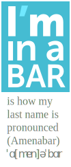

CV – Résumé
front-end developer / designer
Agustín Amenábar L.
full name: Bernardo Agustín Amenábar Larraín
ImINaBAR.com – GitHub – Code Blog – More links at the bottom
Summary
Graphic Designer by profession, web developer by choice, self employed most of my career.
Mediating between clients, designers and their users, facilitating their interaction and goals through web technologies. Working on the web mostly passionately as a front-end developer, always trying to integrate new technologies or new approaches into projects. Huge fan of the 80/20 principle, especially when time is scarce.
Giving wings to designers’ creativity, providing them with options and ideas has been my work for more than 8 years. Doing responsive design before the term was even coined (since the era of full Flash sites). A veteran ActionScript orphan, now in love with front–end technologies, semantics and progressive enhancement. Expert in developing that perfectly fits the needs of each project.
Doing the most varied client work since 2004, always elbow to elbow with designers. From UX to server–side optimization, a wide view of problems usually lets me find solutions where they are most effective.
Skills, Languages and Tools
In order of relevance
- HTML / CSS – (6 years) + Progressive enhancement, mobile first, responsible responsive web design.
- User experience / UI design. (7 years)
- JavaScript (6 years)
- HTML semantic markup (
<i>isn’t for icon). (6 years) - AJAX, JSON & RESTful APIs (3 years)
- Project management and Client relations. (8 years)
- Animation skills
- Illustration skills
- SEO
- LAMP/WAMP server management (managing web-hosting for many clients).
- PHP : Several styles of coding. (7 years)
- MySQL, SQLite(7 years)
- OOP ActionScript 3 (spent many years doing that, still good at it).
Frameworks / CMSs
Listed here, in order of preference, is only what I’m fluent in and what I like working with. I have working knowledge of many more.
- AngularJS (6 months)
- Ionic (6 months)
- jQuery (5 years)
- NodeJS (6 months)
- Perch (3 months)
- Drupal (2 year)
- Sencha Touch 2 (MVC JavaScript) (3 years)
- WordPress (5 years)
- Code Igniter (2 years)
Day to day Tools
My Toys
- Sublime Text
- Google Chrome Developer Tools ♥
- Gulp
- Git / Github
- Command line / console
- Cacoo / Google Drawing
- Pen and paper (colors too)
- NodeJS (tooling)
- SASS/Compass
- Adobe Photoshop
- Adobe Illustrator
- Charles web debugging proxy
- Adobe Flash IDE (old friend)
- LESS
- Sqwiggle (remote working)
Dearest projects
All of the work in medula.cl has been done under my lead; most, directly by me. I have created several long relationships with customers and organizations which enable constant iteration of projects even on tight budgets. Some of the most notable are:
La Guía Silvestre / The Sylvan Guide : biodiversity and wild areas app.
(2014)
My baby, a project in the making. A compiler of biodiversity guides, each aimed at specific locations, with geolocation and local storage of information. It currently can load, process and import Missions from Project Noah and compile them in a Ionic web-app.
Initially started with Sencha Touch 2, but switched to Ionic + AngularJS + NodeJS and fell in love with them.
I applied the project for seed funding, but on september 2014 got rejected for not having enough potential profit.
Note: the huilmo.org website was hacked together from a lousy template in one night, not my code.
The repo can be found at: “https://github.com/baamenabar/vas”
Paz Vial: e-commerce
(2010 – 2014)
A long project that turned a Flash image gallery into a full fledged responsive on-line store. Custom code, front to back. Built as budget became available with frequent revisiting of each module. Designed the UI for the back-end and coded the whole site. Co-designed the client side defining visitor goals and tasks.
In 2012 coded the full front and back-end, integrating a modified version of my jQuery File Upload and Crop project.
In 2014’s iterations attention was put on building a mobile-first responsive redesign and code, optimized for speed.
VIK Winery e-commerce & promotional site
(2010 – 2014)
2014 we rebuild the wine store, mobile first and optimized for speed, plus several new modules for the store functionality.
2011 I did a complete rebuild of a Flash Site retaining most of the look and “responsive” layout, but coding with mobile-first responsive site. Including an adaptive images script which uses Javascript and PHP to load the adequate size images. The site was tested to work from IE7 to Blackberry 5, including common Android and iOS devices and browsers.
Aramark Chile Services offline mobile web-app
(2013)
The iPad version of an interactive presentation we did earlier that year for presenting Aramark’s services for the mining industries at Expo Nor (mining exposition).
Personally led the whole development, from project management to the illustration team. Did the animation, some colouring and the coding.
It’s a website developed to fully work off-line as an app launched from the home screen, aimed at the iPad, but also works perfectly on mobile phones.
Driver: mobile app + WordPress
(2012)
I conceived and completely developed the WDIT Android app. It was developed with Sencha Touch 2 and Cordova to be deployed as a proof of concept for improving security standards in a mine.
The application allows users to select the activities assigned to them and check every task or sub step which can be also verified by a picture that gets uploaded through the local server to AWS for storage an late analysis.
You can view some wireframes.
{kind=link}
{kind=link}
{kind=link}
{kind=link}
{kind=link}
The app has an admin back-end to generate and control activities, tasks, users and permissions.
Developed also a whole suite of web software. From a WordPress site, an internal document publishing web app, to a custom android app.
Some of this process I documented in my blog.
JZMusic: event production + clients accounts
(2012 – 2013)
My earliest client, since our first conversation 10 years ago, he has had creative ideas about his site, together we have built many tools his clients love.
This latest version is a full responsive, mobile first website. Custom JavaScript throughout the site. Drupal private site for the clients’ events, with a playlist generator. (ask me for access to a demo account)
Nescappuccino Game (Nestle)
(2011)
Assembled and directed a team to develop a Game for the sales forces of Nestlé Pro, in Chile. Wrote the script, design, art direction, project direction and lead development of the game, also some illustration.
Here I learned the immense amount of work involved in game development, and learned about many runtime optimization techniques and testing techniques.
You can visit and play some stages below (only the zodiac is playable).
Other e-commerce
I have done several more e-commerce and e-commerce-like sites, some of the ones that remain online are:
- Hot Tub Repair and Service LLC
- http://catalinaamenabar.cl/appp/ This is a mobile sales app I did in a weekend for a pastry shop (The website too).
- e-commerce for a now closed Video games shop: http://goodgame.cl/ (archive)
Work Experience
May 2005 – April 2006: VOXEL MULTIMEDIA
Client services agency dedicated to 3 areas:
- Graphic Design, interactive design and web development.
- Audiovisual production and post-production.
- 3D modeling, animation and rendering.
Charge: Designer / Web Designer.
Responsibilities:
- Design and development of multimedia interactive software (Flash and Director).
- Design and development of websites.
May 2006 – Sept 2014: VOXEL → MEDULA DISEÑO
Client services agency dedicated to Graphic Design, interactive design, web and software development. Branch of Voxel Multimedia. On April of 2009 one partner sold his part to my wife and me and we became Médula Diseño where my wife Violeta Sánchez E. does most of the design job and I the development.
Charge: Partner and Senior Developer.
Responsibilities:
- Project management.
- Design and development of websites.
- Design and development of custom web software.
- Design and development of multimedia interactive software (Flash and Director).
Personal projects
Some work fine and I use everyday, some are work in progress; all could use some more work.
- The Sylvan Guide Wild areas and biodiversity guide, built in AngularJS and Ionic. It’s a simple working demo, more info at huilmo.org
- SVGfall SVG images with reliable fast fallback to bitmap (now on version 2).
- GULP+CSS Boilerplate with Styleguide A simple web Styleguide which works well as a CSS+HTML boilerplate.
- jQuery File Upload and Crop Friendly multiple image uploader with a crop window. Forked from BlueImp’s jQuery Uploader.
- Draggable elements bookmarklet jQuery and jQuery UI bookmarklet to easily make any element draggable with relative, absolute or fixed positioning.
- Liquen-php PHP image manipulation class (resize, crop and caching) Demo
- PNG with PHP GET a simple PNG entering width, height and RGBA values.
- Medula codeBlog / SLyP My attempt to build a static blog generator after only hearing about Jekyll. Still remains as my code blog.
- Musicador Music player designed for non-destructive cropping of songs to create, manage and migrate music for roleplaying sessions (mp3 files).
Education
School
Colegio Cumbres, Santiago, Chile.
(1986 – 1998)
College
Universidad Finis Terrae (1999 – 2005)
Bachelor’s degree in Graphic Design.
Languages
Bilingual in English and Spanish.
Personal information
- Full name: Bernardo Agustín Amenábar Larraín
- Birth date: March 14, 1981
- Address:
Camino agua del Carrizal 9570, Lo barnechea
Santiago, Chile - email: baamenabar@gmail.com
- Telephone: +562 2918 0224
- Nationality: Chilean
- Marital status: Married ♥
Me elsewhere
- “Github”:“https://github.com/baamenabar”
- Code Blog
- Twitter (en)
- Twitter (es)
- G+ (en)
- G+ (es)
- Flickr
- Project Noah
- FB
- The Noun Project
Colophon
This site has it’s own repository on Github, built using Jekyll written with Textile markup.
This HTML CV has also been designed to be printed or saved as a PDF with the proper page-breaks. It will maintain most of it’s layout. If your are reading this on a PDF you can visit the original (and maybe updated) CV on iminabar.com
Thanks for reading so far
Agustín